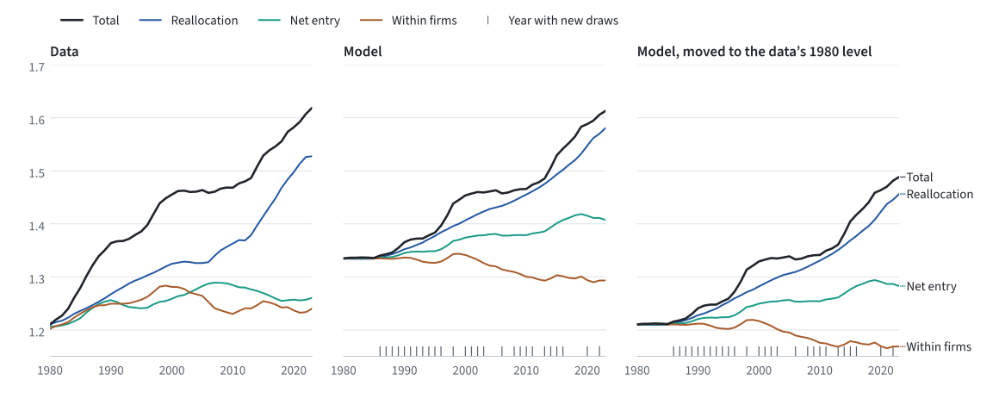

Test the model on a moment it was not fitted to
Unit 03 chose σ, N and ζ so that the model matches three moments in each year. Here the estimated model meets a statistic it never saw: how the rise in the average markup splits into changes within firms, reallocation across firms and net entry.
The economic model and the data follow De Loecker, Eeckhout and Mongey (2026).
- Given
- The 44 annual estimates from unit 03, the model’s firms in each year, and the data’s split of the sales-weighted markup.
- Find
- The same split in the model, year by year, added up from 1980.
- Explain
- Which parts the model matches, which it misses, and why it starts above the data.
Targets are fitted. Other moments are a test.
Estimation by the method of moments has four steps. Units 01 to 03 covered the first two; this unit adds the other two.
- 01Choose the targetsStatistics the parameters should explain: reallocation, the average markup and the SGA share.
- 02EstimatePick σ, N and ζ in each year so that the model’s three moments come closest to the data. Unit 03.
- 03Test on untargeted momentsCompute a statistic the estimation did not use and compare it with the data. This unit.
- 04InterpretUse the matches and the misses to judge what the model explains.
The model matches its targets by construction: the search keeps the parameters that make them fit. A statistic left out of the search has no such guarantee. If the model matches it too, that supports the model’s mechanism, not only its parameter values. If it misses, the miss shows where the model falls short.
The level of the average markup is a target. How its change splits into parts is not. The split depends on which firms gain sales and how their own markups move, and the estimation never looked at either.
Follow the same firms across separate economies.
The model is not dynamic. Each year is a separate economy with its own σ, N and ζ, solved for two periods. Those two periods produce the targeted reallocation moment; they are not two calendar years.
To compare calendar years, take period 1 of each year’s economy and use the same random numbers in every year. Slot (i, j), row i in market j, then receives the same productivity shocks each year, and its productivity changes only because σ changes. So slot (i, j) stands for the same firm. A firm that operates in both years is continuing; one that operates only in the later year is an entrant; one that operates only in the earlier year exits.
The shocks fill an M × J array. When M = floor(N) changes between two years, the same shock lands in a different slot, so slot (i, j) holds a different firm. This happens in 27 of the 43 pairs of years. The three parts still add up to the total in those pairs, but the split mixes different firms. The figure below marks these years.
Pairs ending in 1986–1996, 1998, 2000–2003, 2006, 2008–2011, 2013–2016, 2020 and 2022.
Three parts of the change in the average markup.
For two adjacent years, t − 1 and t, the change in the sales-weighted markup splits exactly into three parts:
- Reallocation
- Within firms
- Net entry
- Firm i’s share of all sales in year t, period 1.
- The sales-weighted markup, . It is a targeted moment.
- A firm’s markup minus the earlier year’s average, .
- Continuing firms, entrants and exiting firms.
Compute the parts for every pair of adjacent years and check that they add up to the total; in the saved run the largest gap is 4 × 10−16. Then add each part up from 1980, starting from the 1980 markup, and smooth every series with a centred five-year moving average. Near 1980 and 2023 the window shrinks to the years available. The data series are built the same way and get the same moving average.
Reallocation drives the rise in both.

| Total | Within firms | Reallocation | Net entry | |
|---|---|---|---|---|
| Data | +0.382 | +0.012 | +0.327 | +0.043 |
| Model | +0.242 | −0.071 | +0.254 | +0.059 |
In the data, the sales-weighted markup rises by 0.38 between 1980 and 2023, and reallocation accounts for 0.33 of it: sales move toward firms whose markups are above average. The model gets this main fact right. Reallocation gives its largest part too, 0.25, and net entry adds a little in both.
The model misses in two ways. Its within-firm part falls by 0.07 while the data’s barely moves, and its total rise, 0.24, is smaller than the data’s. Most of the model’s rise, 0.20, comes in pairs of years with new draws, where the split is less reliable. In the 16 pairs that keep the same firms, the total rises by 0.04 and reallocation alone by 0.06.
A floor under every markup.
In this model a firm’s markup cannot fall below η/(η − 1) = 1.297, the markup of a firm with a tiny market share. The data’s markup in 1980 is 1.20, below that floor. The estimation pushes the model’s markup down with many firms per market: in 1980–87, N sits near the top of its range, between 57.0 and 59.9 with an upper limit of 60, and the model’s markup stays at about 1.33. That is why the third panel moves the model to the data’s 1980 level before comparing the changes.
Solve the 44 years again and check the numbers.
Download the code and data for this unit. From the unpacked folder, or from the repository root, this command solves each year at its unit 03 estimate, splits the markup, and writes the table and the figure to outputs/untargeted. It needs Python 3.10 or later with NumPy and SciPy, and Matplotlib for the figure. The 44 economies take about 18 core-minutes; with four workers, about 5 minutes.
python lessons/05_untargeted/decompose_markup.py --workers 4 --figureCheck your result
The script should print these three lines, with the number of seconds and the output folder of your run before and after them:
Largest difference from unit 03's saved moments: 0
Largest adding-up error: 4.04e-16
Years whose firms are new draws: 27 of 43- A moment difference of 0 means that every year’s economy is the one unit 03 estimated. On another computer it can be a little above 0, but it stays below about 10−15.
- The adding-up error is the largest gap between a year’s change in the markup and the sum of its three parts. It should be below 10−15.
- In
outputs/untargeted/markup_decomposition.csv, the model’s sales-weighted markup,model_total, is 1.3342 in 1980 and 1.5758 in 2023, a rise of 0.242. The cumulated partsmodel_within,model_reallocationandmodel_net_entrychange by −0.071, +0.254 and +0.059 over the same years. These are the Model row of the table under “Reallocation drives the rise in both.”
Code on GitHub lessons/ ↗ · 07_python/ ↗